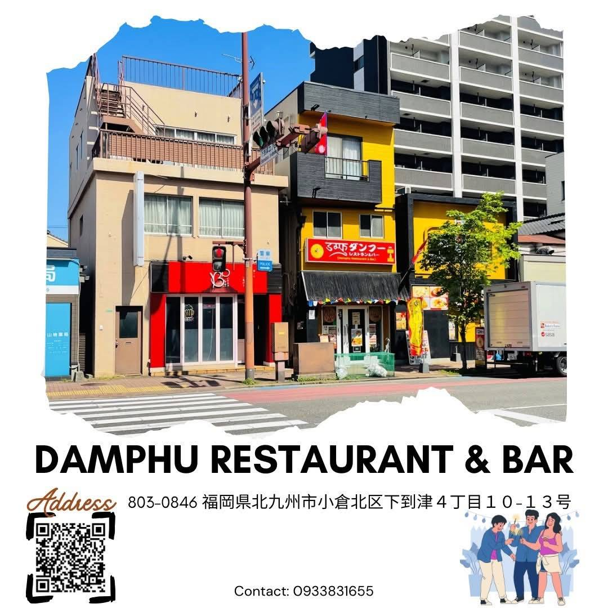
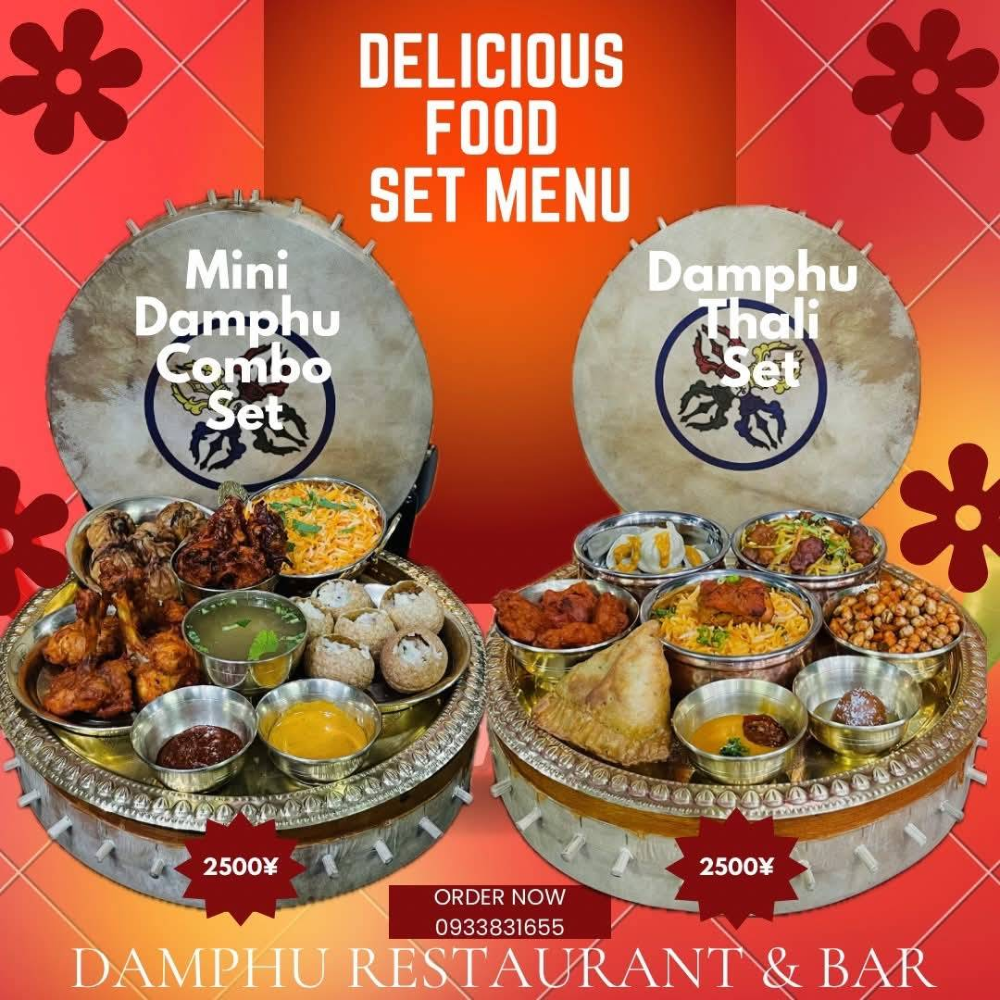

ネパール料理・
異文化交流食堂
故郷の味と、大阪の温かさが出会う場所
営業許可書 第 2025-20775 号

写真：ダンプーレストラン＆バー・店舗外観
Service 03
食は、定着の
食は、定着の
インフラです。
日本に来て最初に感じる孤独のひとつは「食の違い」です。げんき大阪は、外国人材が「ここなら安心して暮らせる」と感じられる場所として、ネパール料理食堂を運営しています。採用した外国人材のランチ・夕食の場として、ぜひご活用ください。
- 本格ネパール料理 — ネパール人スタッフが調理
- 日本食・アジア料理も提供。地域住民も利用可
- 外国人材の食事支援・社食利用として提携可能
- 自社農業事業で栽培したアジア野菜を使用
Features
食堂の特徴
本格
本格ネパール料理
ダルバート（豆スープ定食）・モモ（餃子）・チョウミン（焼きそば）など、ネパール人スタッフが調理する本場の味を提供します。
多様
日本食・アジア料理も
日本人のお客様にも楽しんでいただけるよう、日本食・アジア料理も提供。地域住民との交流の場としても機能しています。
拠点
コミュニティの拠点
食事をしながら外国人材同士、また日本人との交流が生まれます。孤立を防ぎ、地域とのつながりを育む場所です。

写真：本格ネパール料理セットメニュー（ダルバート・モモなど）
Menu
本場の味を、
本場の味を、
大阪で。
ネパール人スタッフが調理する本格料理が揃います。外国人材が「懐かしい」と感じられる味、地域住民が「おいしい」と感じられる味。その両方を目指しています。
- ダルバート（豆スープ定食）— ネパールの日常食
- モモ（ネパール餃子）— 蒸し・揚げの2種類
- チョウミン（焼きそば）— ネパール式スパイス
- 自社農業産アジア野菜を使用した季節メニュー
Info
店舗情報
| 店名 | ダンフーレストラン&バー |
|---|---|
| 所在地 | 〒803-0846 福岡県北九州市小倉北区下到津４丁目１０−１３ |
| 営業時間 | 11:00-23:00 |
| 定休日 | 不定休 |
| 座席数 | 70席以上 |
| 駐車場 | 5台 |